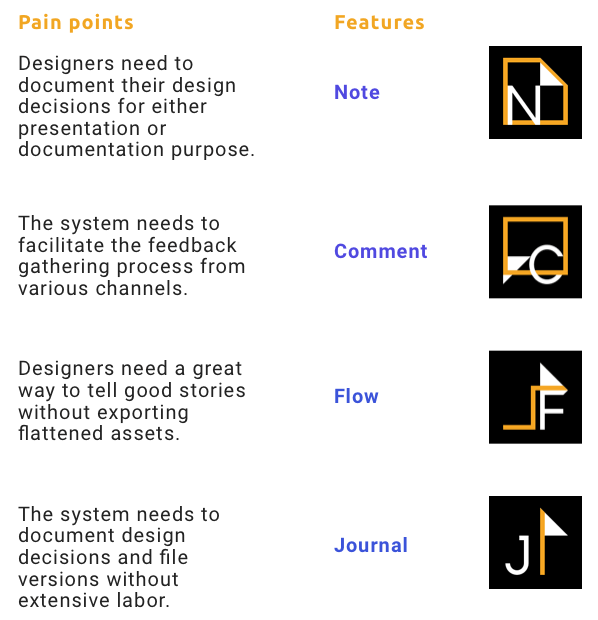

Bite-size Summary
Our project aims to solve design team cooperation issues including information integration, design documentation, and design presentation.
We built Shard, a collaboration app for product teams to efficiently communicate with stakeholders, document design rationales, track design changes, and manage/share files.
My Contribution
My role was focused on conducting user interviews and analysis; the UI design of Note, Journal, and demo features; and the video editing for the final product pitch.
Role:
UX research & design
Time:
3 months
Skills:
- Usability testing
- User studies
- Wireframing
- Prototyping
- Interaction design
- Visual design
- Product thinking
Tools:

Problem Space
LET'S FACE IT. As a designer, to efficiently integrate information, document design process, and present prototypes is always challenging, no matter how many design collaboration tools are out there...

Design review meetings.

Me, after several design review meetings...

Every onboarding be like...
P.S. Great gif & product, Abstract!
Solution at a Glance
Our team is really proud of this product promotion video.
Remember to turn on your volume for a full experience!
Project Goals
Our goal is to design a tool that can efficiently support integrating, documenting and tracking information of design projects for UX design teams as projects iterate.
Key Research Questions
Before starting the research process, we listed out the key questions that need to be answered in the research phase.

Cooperation
- How do designers cooperate and communicate with other roles in a project?
- How do designers hand over projects?
- How do remote designers communicate with team?
- What are the obstacles during communication for project hand over?
- What pain points / difficulties regarding cooperation do designers encounter most frequently during the development process?
- How does the onboarding process look like (e.g., interns, new designers, taking over a project)?
- How do teams break down tasks among different designers in a collaborative project?

Documentation
- How do designers do design and research documentation?
- How do designers access existing documentation / information?
- What are the steps involved in project documentation?
- What pain points / difficulties regarding documentation and accessing resources do designers encounter most frequently during the development process?
- How does the design documents update / feedback / review work?
- What kind of documents are involved in the design phase of a project? Are they shared or local?

Tools
- What tools do they use regarding communication and documentation?
- What are the parts that existing tools are insufficient to support the communication / cooperation?
Illustration credit: Undraw
We further matched the questions with a research method that we thought could best answer the question.

After collecting survey responses, we recruited designers and researchers in different seniority to give us a whole picture of team cooperation.

Responses and Participants

Interview Data Analysis


Interview Findings
We have 6 major findings after affinity diagraming.
Running list of tasks: This is usually in the form of a Jira boards or a ticketing system where teams use to keep track of the design plans and processes. In certain teams, the feedback for different iterations are actually directly given through these systems as tickets to fix. a lot of the information here gets buried through time.
Most teams and designers have a way of keeping notes or logs as they go through meetings and receiving feedback. A lot of designers would keep these notes or logs in their notebooks and sketchbooks, some would digitize and organize this information later on; but for some, notes would only live within the lifespan of the project and gets discarded after a project is done.
The fact that these files often contain no extra information regarding the descriptions and explanations of the designs means that these files will become hard to interpret later on.
A lot of the design decisions and feedback happen in face to face meetings without leaving traces in the final documentation, making the loop-in process difficult.
Project assets usually go in a shared drive after the project wrap-up. The result is that a lot of the files get buried and when any information needs to be fished out, people have to go back to the actual people worked on the project. Some designers do express the frustration that some issues and details get forgotten as a result.
Information transfer is time-consuming: A lot of the information ended up in the final “documentation” comes from the notes/logs that designers put down throughout the design process. But since the notes tend to live in different spaces, the transformation process is usually done manually and time-consuming.
Design Requirements
Based on our research findings, we developed 6 main requirements for our design.
Encourage users to put down information in early design process.
- Most users reported that it’s labor intensive to write thorough rationales and documents to justify the design decisions. Our solution needs to encourage users to put down notes early.
Providing guides/prompts to organize feedback on a regular basis.
- The context of product design is usually iterative, most designers would forget to keep track of the design changes. The repercussion is that the task of generating documents becomes unmanageable in the end.
Streamlining the process of transforming informal notes to formal documents.
- The solution needs to reduce time and effort that users need to put in for generating final documentation.
Making the documentation process iterable.
- Our data show that designers sometimes spend a lot of time generating design documents, but after a few iterations the documents became out of date.
Providing ways to digitize notes gathered from face-to-face meetings.
- We found that design team members prefer face-to-face communication, but most of them do not digitize notes taken from meetings due to time or effort constrain.
Documentations should should be coupled with the actual design.
- Text descriptions are usually time-consuming to generate, and they are not very useful in communicating the needs and technical constraints. Designers usually end up using screenshots or pdf files to further specify the design elements and decisions.
Competitive Analysis
In order to have a better understanding of the existing products used by the UX design team regarding documentation, we compared the products mentioned by our interview participants as well as other parallel tools with relevant features to see their pros and cons, as well as finding opportunities and borrow ideas from them.
Below are the criteria we selected for competitive analysis:
- Supporting note taking
- Integration of design and comments
- Integration with other communication & management tools
- Version control features
- Wireframing & prototyping support
All the products we looked into. And, of course, we checked all design apps that support collaboration.
After analyzing some of the relevant key screens of our competitors, the main ideas we borrowed from these tools were:
- Using timeline to present information/file versions
- Highlighting changes made on the design
- Integrating relevant design notes into one place
Functionality we found that were insufficient to support efficient cooperation and that we would like to develop:
- Supporting interaction and prototyping on hand-off & presentation tools
- Supporting efficient presentation of user flow
Keep the Big Picture in Focus
We further utilized an information flow chart to find out what kind of information is unstructured and tend to get lost.
{kind=link}
We also identified the touchpoints; clarified and brainstormed solutions in the end user’s shoes via a user journey map.
{kind=link}
Any great innovation without a market would eventually become a failure. A value proposition is helpful in terms of identifying the market needs, pain points, pain relievers, and delights.
{kind=link}
No, You Can't Have Your Cake and Eat It
It's important to stay agile and decide an MVP as a start. The key actions that we tried to focus our designs on can be summed up by the following 4 aspects:
- Make documenting feedback easier so designers can better transform feedback or ideas into presentable design rationales.
- Make design progression more accessible to stakeholders.
- Provide a seamless and lossless way (pre-scripted workflow and voiceover) of showcasing design details and interactions without exporting them into flattened assets.
- A timeline for the design iterations so that designers, stakeholders, and future teammates can stay informed of design changes and progression.
{kind=link}
Finalized MVP Features
Lo-fi Prototype
Update information and design from other tools to the standalone platform – Shard, and collect feedback from it.
Keeping the above decisions in mind, we started doing wireframes and prototypes to demonstrate how we could integrate design tools and communication tools (Sketch and Slack as examples) with our standalone platform – Shard to support information integration, design presentation, and design documentation by providing features such as Notes, Comments, Flow, and Journal.
{kind=link}